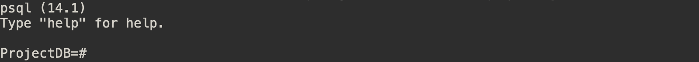

Introduction
Do NOT post your project on a public Github repository.
This is the online handout for lab assignments for CSCI4707 at UMN.
Connect to CSE Lab machines
All projects should be able to run on any CSE UNIX/Linux lab machines.
You should have an active CSE Labs Account and be able to connect to the machines. If not, please connect TA ASAP.
We recommend to work on the machines listed on this page, for example csel-kh1250-01.cselabs.umn.edu. VOLE is NOT recommended for the lab works.
You are free to use any terminal/editor/IDE. I personally recommend to use VS code for all labs, as it provides a built-in terminal and allows you to edit files remotely. You can learn how to set up remote editing for VS Code on this page1.
Useful links:
Credit to Christopher Kauffman
Setup PostgreSQL
This chapter includes:
Installation
We first download and install PostgreSQL, then we initialize a folder for PostgreSQL to keep data.
Pre-request
- All projects should be able to run on any CSE UNIX/Linux lab machines. You should be able to connect to any CSE UNIX/Linux machines. See detail on this page
- PostgreSQL is a large software. You will want at least 200 MB of space in your machine. If not, learn how to free your space on this page.
We recommend to work on the machines (with numbers) listed on this page, for example
csel-kh1250-01.cselabs.umn.edu. VOLE is NOT recommended for the lab works.
Install PostgreSQL
- Download version 14.1 of PostgreSQL.
wget https://ftp.postgresql.org/pub/source/v14.1/postgresql-14.1.tar.gz- Extract.
tar xvzf postgresql-14.1.tar.gz- Create an installation folder, called “install”.
mkdir installThen, we retrieve the full path of both source and installation folder by executing the following command:
- Retrieve the full path of the directory.
pwdThis will return a full path of your current directory. Throughout this documentation, this path is referred as $W$. So, don’t forget to replace it with your actual working directory. Thus, the path of the PostgreSQL’s source code is located at $W$/postgresql-14.1 and the path where we will install PostgreSQL is located at $W$/install.
Next, you will configure the installation of PostgreSQL and install PostgreSQL on the given path.
- Go to the source directory.
cd postgresql-14.1- Run the configure command. Don’t forget to change $W$ to your actual directory.
./configure --prefix=$W$/install- Run the makefile.
make- Run the installation.
make installInitialize Database
After the installation has finished, you will need to initialize and create a database to use. In this example, we will initialize the database at $W$/install/data folder.
- Go to the installation folder.
cd ../install- Initialize database store.
bin/initdb -D dataOnce the database has been initialized, we can start the PostgreSQL backend.
Run PostgreSQL
PostgreSQL takes a classic server-client architecture. Therefore, we need two terminal windows to start the server and client separately. Let's call them Terminal S (for server) and Terminal C (for client) respectively.
First time start the server and open the client
Terminal S
- Make sure you are in the installation folder
$W$/install.
cd $W$/install- Start the server
bin/postgres -D dataYou should see the following output.
 It will keep printing out logs in this terminal. We can use this terminal to get information on what is happening in our DBMS.
It will keep printing out logs in this terminal. We can use this terminal to get information on what is happening in our DBMS.
Terminal C
To open the client, open another terminal and use the following command to create a database to use: (In this example, we call the database ProjectDB)
- Make sure you are in the installation folder
$W$/install.
cd $W$/install- Create the ProjectDB database.
bin/createdb ProjectDBWe interact with our DBMS by using a program called psql.
- Open
psql
bin/psql ProjectDBYou should see the following output.  You can then type and run sql in this program.
Shut down the server
It is a good habit to shut down the server every time you stop working on the lab. To shut down the server, go to Terminal S and shut it down with ctrl-c.
Run PostgreSQL next time
The next time you want to start the database again, you only need to run two terminals and start the server and client again.
- Make sure you are in the installation folder
$W$/install.
cd $W$/install- Start the server (
Terminal S)
bin/postgres -D data- Open
psql(Terminal C)
bin/psql ProjectDBOptional
You can add $W$/install/bin to your PATH environment variable, so you don't need to go to $W$/install every time to start the server and open psql. To do so:
- Add
$W$/install/binto~/.bashrc, remember to replace$W$with your actual working directory
echo 'export PATH=$W$/install/bin:$PATH' >> ~/.bashrc- "Refresh" bash
source ~/.bashrcThen you can start the server at any directory with
postgres -D dataAnd open the client with
psql ProjectDBPostgreSQL 101
You are supposed to learn how to use PostgreSQL on you own. Specific SQL grammar (dialect) is not the focus of this course. This tutorial only aims to help you start the labs. The code blocks on this page are aimed for examples, not for copy-and-run.
1. All sql in PostgreSQL end with a ";"
psql waits for a ;, then it knows it is an end for the sql. To run an SQL, type your sql, end with a ; then hit Enter.
ProjectDB=# CREATE TABLE student (sid integer, name text);
CREATE TABLE
ProjectDB=# DROP TABLE student;
DROP TABLE
This means you can type sql in multiline in psql. Type your sql in multiline, end with a ; then hit Enter. When you are in the first line of your sql, line starts with =#; when you are in brackets, line starts with (#, otherwise line starts with -#.
ProjectDB=# CREATE TABLE
ProjectDB-# student
ProjectDB-# (
ProjectDB(# sid integer,
ProjectDB(# name text
ProjectDB(# )
ProjectDB-# ;
CREATE TABLE
2. Helpful commands in psql
In addition to SQL, psql has many helpful commands.
- You must exit psql by typing
\qand do not usectrl-c.
ProjectDB=# \q
- To show relations you have created, use
\d
ProjectDB=# \d
List of relations
Schema | Name | Type | Owner
--------+---------+-------+----------
public | student | table | huan1531
(1 row)
- To show schema of a relation, use
\d <relation-name>
ProjectDB=# \d student
Table "public.student"
Column | Type | Collation | Nullable | Default
--------+---------+-----------+----------+---------
sid | integer | | |
name | text | | |
- To run an sql script located at
$W$/script.sql, use\i $W$/script.sql
3. An example SQL script
Just like .sh file for shell, .sql file is an executable file for psql, containing one or more sql queries.
Create a new file script.sql in $W$. Copy the following to the file.
/*
* script.sql
* A .sql script example
*/
-- Single line comment in .sql file starts with "--"
/*
* Multiline comment is wrapped by "/" and "*"
*/
-- Drop table if exists
DROP TABLE IF EXISTS student;
-- Create table
CREATE TABLE student (
sid integer,
name text
);
-- Insert value into table
INSERT INTO student VALUES (1, 'John');
INSERT INTO student VALUES (2, 'Sam');
INSERT INTO student VALUES (3, 'Mark');
INSERT INTO student VALUES (4, 'Ted');
INSERT INTO student VALUES (5, 'Ross');
INSERT INTO student VALUES (6, 'James');
INSERT INTO student VALUES (7, 'Tom');
-- Do some sample queries
-- 1. Select all from table, '*' return all attributes
SELECT * FROM student;
-- 2. What is Ross's student ID
SELECT sid
FROM student
WHERE name = 'Ross';
-- 3. Who are the students with ID less than 3
select sid from student where sid < 3;
As you can tell from the last query, SQL is case insensitive. However, it is always good to follow some style guides, for example this guide.
Save the file and go back into psql. To run the script, use \i $W$/script.sql.
ProjectDB=# \i $W$/script.sql
DROP TABLE
CREATE TABLE
INSERT 0 1
INSERT 0 1
INSERT 0 1
INSERT 0 1
INSERT 0 1
INSERT 0 1
INSERT 0 1
sid | name
-----+-------
1 | John
2 | Sam
3 | Mark
4 | Ted
5 | Ross
6 | James
7 | Tom
(7 rows)
sid
-----
5
(1 row)
name
------
John
Sam
(2 rows)
.sql file can also be passed as an argument to psql, so you can run a .sql file without going into psql. Copy and run following command in your terminal.
bin/psql ProjectDB -f $W$/script.sqlYou should see the following output.
$ bin/psql ProjectDB -f $W$/script.sql
DROP TABLE
CREATE TABLE
INSERT 0 1
INSERT 0 1
INSERT 0 1
INSERT 0 1
INSERT 0 1
INSERT 0 1
INSERT 0 1
sid | name
-----+-------
1 | John
2 | Sam
3 | Mark
4 | Ted
5 | Ross
6 | James
7 | Tom
(7 rows)
sid
-----
5
(1 row)
name
------
John
Sam
(2 rows)
4. Use online resources
You can find tons of tutorials, Q&As for SQL and PostgreSQL on Internet.
Troubleshooting
Will keep updating as time goes on. Contributions are welcomed.
Lab 1
Do NOT post your project on a public Github repository.
Introduction
You are going to use PostgreSQL, a major open source DMBS, to perform some queries against a predefined database. The schema and sample data of the database are provided.
Overview
In this project, you will create a ProjectDB database. ProjectDB is a database used by a software development company to keep track of its projects. ProjectDB keeps track of the projects, the employees/managers working on the projects including the universities they were graduated from. In particular, in this lab, you will perform the following tasks:
- Setup the PostgreSQL database. You need to finish Chapter 3 before working on the following tasks.
- Create the schema of the ProjectDB database. See Part 1
- Perform multiple queries. See Part 2
- Perform data updates. See Part 3
Grading
- Part 1: 20 points
- Part 2: 60 points
- Part 3: 20 points
Part 1: ProjectDB Schema Creation
ProjectDB consists of the following relations defined in the following schemas. Please create tables for them in PostgreSQL.
Important Update (02/08)
- Primary keys are underlined for each relation. You need to include them in your
CREATE TABLEstatements. - Include the following constrain with
ON DELETEactions in yourCREATE TABLEstatements.- When a project is removed from record, we no longer keep records for
EmpProjectandProjectManager.
- When a project is removed from record, we no longer keep records for
- You may find these parts of document useful for this lab
University (
UnivId: NUMERIC
UnivName: VARCHAR(40)
)
Department (
DeptId: NUMERIC
DeptName: VARCHAR(40)
)
Employee (
EmpId: NUMERIC
EmpName: VARCHAR(40)
DeptId: NUMERIC REFERENCES Department(DeptId)
HomeZipCode: NUMERIC
)
Project (
ProjId: NUMERIC
ProjName: VARCHAR(40)
)
Graduate (
EmpId: NUMERIC REFERENCES Employee(EmpId)
UnivId: NUMERIC REFERENCES University(UnivId)
GradYear: NUMERIC
)
EmpProject (
EmpId: NUMERIC REFERENCES Employee(EmpId)
ProjId: NUMERIC REFERENCES Project(ProjId)
)
ProjectManager (
ProjId: NUMERIC REFERENCES Project(ProjId)
MgrId: NUMERIC REFERENCES Employee(EmpId)
)
What to Submit?
The submission of your work is a file named p1.sql, that contains all SQL queries to create the above relations.
Grading Criteria:
- Total: 20 points
- 10 Points: The provided script is able to create all the above relations with the correct schema.
- 10 Points: The provided script handles the FOREIGN KEY constraint perfectly.
Part 2: SQL Queries
Once you have created the above schemas, you need to load some data to the relations.
Download data.sql with this command:
wget https://csci4707-umn.github.io/lab-book/resource/lab1/data.sqlRun the data.sql file to load the data into the database. In psql:
\i <path-to-data.sql>Then, write SQL queries that answer the questions below (one SQL query per question but you are allowed to use nested queries). The query answers should be duplicate-free, but you should use distinct only when necessary.
-
Find the names of the employees who are living in Minneapolis (Zip code 55414 or 55455).
-
Find the names of the projects that are currently managed by any manager.
-
For each project, display its name as well as the number of employees who are currently working on it except for a project without any employees.
-
Find the name(s) of the university/universities that graduated the maximum number of distinct managers.
-
For each employee, say E, display the name of E, the department name of E, and the graduation year of E.
-
Display the name of the project that has the maximum number of different employees who worked/"are working" on it. If more than one project qualify, display all the qualified projects. (Hint: refer to EmpProject only and not ProjectManager).
What to Submit?
The submission of your work is a file named p2.sql, that contains all the above SQL queries.
Grading Criteria:
- 10 Points (no partial credit) for each correct SQL query.
Part 3: SQL Updates and Deletes
-
Employee with Id 2 has moved to an address in 55414. Please update this in the database and select that employee after the update to ensure that the corresponding tuple has been updated.
-
Just as a practical joke, increment the graduation year of every graduate who graduated before 2002 by three.
-
Just another practical joke, decrement the graduation year of every graduate who lives in 55414 by two.
-
For some reasons, the database owner wants to get rid of everything related to the project with Id 2. Please delete all the tuples related to Project 2 (as if that project has never existed before).
What to Submit?
The submission of your work is a file named p3.sql, that contains all the above SQL queries.
Grading Criteria:
- 5 Points (no partial credit) for each correct SQL query.
Important updates
Please make sure you have followed the updates before submit your work.
Ordered by date
Lab 1 Submit Guidance
Do NOT post your project on a public Github repository.
Please make sure you have followed the updates before submit your work.
Ordered by date
Only one submission is needed for group work. Please include everyone’s name and ID in a README.txt file.
The README.txt file should use the following template, where ID is your x.500 ID.
Student 1
Name:
ID:
Student 2
Name:
ID:
Student 3
Name:
ID:
Zip all four files (p1.sql p2.sql p3.sql and README.txt) into one zip file with the following command. You need to have all four files in the same directory and run the command in that directory. Remember to replace <x.500> with your x.500 ID. This ID can be anyone who submits the work for the group.
zip <x.500>.zip README.txt p1.sql p2.sql p3.sqlThis command generates a zip file named <x.500>.zip. Submit this file to Gradescope.
Lab 2
Do NOT post your project on a public Github repository.
Introduction
You are going to change the buffer replacement policy that is currently used in PostgreSQL. In particular, the original replacement policy of PostgreSQL is a "clock sweep" algorithm with LRU (Least Recently Used). In this lab, you are asked to implement an MRU (Most Recently Used) replacement policy without using the "clock sweep" algorithm.
Outline
In this lab, you need to:
- Set up PostgreSQL: Same as in Lab 1. If you correctly set up PostgreSQL in Lab1, you are safe to skip this section. See Chapter 3 if you need to re-install.
- (Due Mar 29) Understand MRU, go through the related code and answer the questions. See 5.1.
- Implement MRU within PostgreSQL. See 5.2.
- Compile and test your changes. See 5.3.
Grading
- 15 Points (Due Mar 29): Answer the questions on Gradescope. See 5.1 for grading detail.
- 20 Points: Your changes must be able to compile without any errors.
- 35 Points: The MRU replacement policy including incorporating the printing instructions.
- 30 Points: The quality of your solution.txt.
Note
Since reading and understanding an open-source framework is the main goal of the lab, the TA is only allowed to do the following:
- Help you with the installation of PostgreSQL.
- Help you in understanding the concept of buffer management policy.
- Help you in understanding what the assignment wants you to do.
Unfortunately, the TA is not allowed to help you in navigating the source code (including telling you the functionality of a function or variables) since one of the goals of the lab is to make sure that you understand the source code of the buffer manager in PostgreSQL. Once you understand the source code and know where to make the change, it is very easy to solve the lab.
Part 1: Understand MRU and Code
MRU
The basic idea of MRU can be seen in here. However, you will need to adapt the algorithm with the database buffer management policy concept.
Implement MRU in PostgreSQL
Most (if not all) of your changes will be located in the directory: $W$/postgresql-14.1/src/backend/storage/buffer/.
To implement the MRU algorithm, you will want to maintain the timestamp of each buffer when they are "used". For simplicity, you will maintain a global integer value which will be assigned to a buffer whenever a buffer page is "used", then, increment the integer. Initially, all buffers will have zero timestamp.
When you need to replace a buffer, you scan the buffers, determine the candidate (not in use) buffers and evict the one with the most recent timestamp.
Questions (15 pts)
These questions are designed to let you start early and guide you through the codebase. Answer the following questions on Gradescope. This work is due on Mar 29.
Please answer the following questions based on the original code of PostgreSQL 14.1:
- There are five files under
$W$/postgresql-14.1/src/backend/storage/buffer/. What is each file's job? Answer for each file in one sentence. (5 pts)
- buf_init.c
- buf_table.c
- bufmgr.c
- freelist.c
- localbuf.c
-
What is the original buffer replacement policy/algorithm for PostgreSQL? In which file? In which function? From which line to which line? (4 pts)
-
Which part of PostgreSQL code defines the concept "buffer"? In which file? By which class? (2 pts)
-
Where does PostgreSQL "initialize" each buffer? In which file? In which function? (2 pts)
-
Where does PostgreSQL "use" each buffer? In which file? In which function? (2 pts)
Submitting and Grading
This work is due on Mar 29, about half way through the whole lab. Only one submission is needed for each group.
You will get all 15 points if you answer all the questions, regardless their correctness.
The TA will not give you the correct answer. Instead, the TA will give you correct/wrong feedback. Again, the major goal of the lab is to train your ability to work on (hack into) a real DBMS system, so the TA is not allowed to help you in navigating the source code.
Part 2: Implement MRU
Implement MRU in PostgreSQL
Most (if not all) of your changes will be located in the directory: $W$/postgresql-14.1/src/backend/storage/buffer/.
To implement the MRU algorithm, you will want to maintain the timestamp of each buffer when they are "used". For simplicity, you will maintain a global integer value which will be assigned to a buffer whenever a buffer page is "used", then, increment the integer. Initially, all buffers will have zero timestamp.
When you need to replace a buffer, you scan through the buffers, determine the candidate (not in use) buffers and evict the one with the most recent timestamp.
Print out log
To verify the correctness of your implementation, you need to print out the timestamp of all candidates (not in use) buffers as:
Candidate buffers: <a comma separated list of timestamps>
and also explicitly print out the timestamp of the buffer that is going to be replaced as:
Replaced buffer: <timestamp>
An example of expected output is shown below. Please note that your output may have different timestamps, different amount of candidates for each replacement. That is possible.

You can print out the log with the printf function in C programming language. It will print in your server terminal.
Part 3: Compile and Test
Change PostgreSQL config
To test your changes, you first need to change the memory size of PostgreSQL. Since the test case given to you is very small compared to the default memory size of PostgreSQL, it is a good idea to config the memory to a smaller size.
The configuration is located in: $W$/install/data/postgresql.conf. You need to change the shared_buffer size to shared_buffers = 128kB.
Compile your changes
To compile your changes, you must run the following three commands from the source directory, i.e., $W$/postgresql-14.1. Remember to shutdown your server before you make a new compiling:
- Clean previous make.
make clean- Make.
make- Install the changes.
make installIf you get no error in this process, you will be able to start and server and client and test your changes.
Test your changes
You need two files to run the test:
values10k.dat: contains the data to be inserted into PostgreSQL.buffer_add.sql: contains the sql to do the insertion.
Download these two files to somewhere with following commands:
wget https://csci4707-umn.github.io/lab-book/resource/lab2/values10k.dat && wget https://csci4707-umn.github.io/lab-book/resource/lab2/buffer_add.sqlYou will test your change by inserting data into the database and looking at the replaced buffer’s timestamp compared to all other candidate buffers’ timestamp.
To insert the data to the database, you need:
- In
buffer_add.sql, update the<PATH_TO_values10k.dat>to the real path tovalues10k.daton your test machine. - Start the server and the
psql. - In
psql, executebuffer_add.sqlwith following command. Remember to replace<PATH_TO_buffer_add.sql>to the real path tobuffer_add.sqlon your test machine.
\i <PATH_TO_buffer_add.sql >An example of running the test is shown below. The terminal on the right is the server terminal and the terminal on the left is the client terminal.

Submit Guidance
Do NOT post your project on a public Github repository.
Remember this lab has two dues:
- Phase 1 (Due Mar 29): Answer the questions on Gradescope.
- Phase 2 (Due Apr 14): Submit you implementation. There will be a 10% penalty off your grade for a 24-hour late submission.
Phase 1 submission (Due Mar 29)
See 5.1
Phase 2 submission (Due Apr 14)
Only one submission is needed for group work.
You must submit a zip file named <x.500>.zip. Your zip file should unzip to a following structure:
<x.500>/
├── solution.txt
└── changes
├── foo.c
├── bar.c
├── ...
└── foo.h
changes: A folder that contains all files that you have changed in order to fulfill the lab. Please only submit the file itself (don’t include the directory). For example: if you change a file insrc/backend/foo.c, only putfoo.cin the folder.solution.txt: Modify the solution.txt template below as per your changes. List all group members at the very beginning of this file.
Students:
1. <Student 1 Full Name> (<Student 1 x500>)
2. <Student 2 Full Name> (<Student 2 x500>)
2. <Student 3 Full Name> (<Student 3 x500>)
Brief Summary:
<A Brief Summary about the change you make (1 Paragraph max)>
Detailed Changes:
1. <Modified File 1>: <The path of the modified file from src directory>
- <Detailed changes of the file>.
For example: In line xxx, I make a change so that the buffer will do ......
2. <Modified File 2>: <Path from src>
- <Detailed changes of the file>.
Each violation to the submission guideline will result in a 10% penalty.